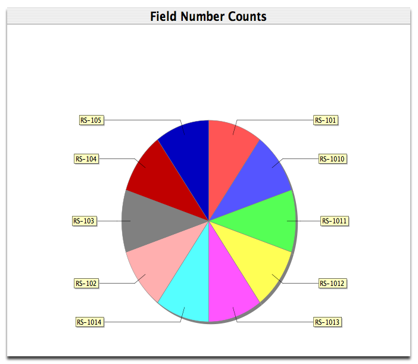

The Top 10 Report displays the top 10 occurances within a single column and displays them as a Pie Chart. It is basically the same report as the Data Set Summary and the Bar Chart report, with the exception that it only shows the top 10 items.
The easiest way to create a Top 10 report is to 'drag and drop' a Data Set onto the Top 10 action on the sidebar. This eliminates the need to choose a Data Set for the report.
Or, click the Top 10 action on the Sidebar. A file dialog will appear to choose a Data Set for the report.
Next, choose a column for the report:
Select a Column
Select a field and click 'OK'. The report will open in the Workspace.
The following image is an example of a Top 10 report:

Top 10 Report
Several control buttons for the report appear at the top of the Workspace. The buttons are shown in the diagram below: